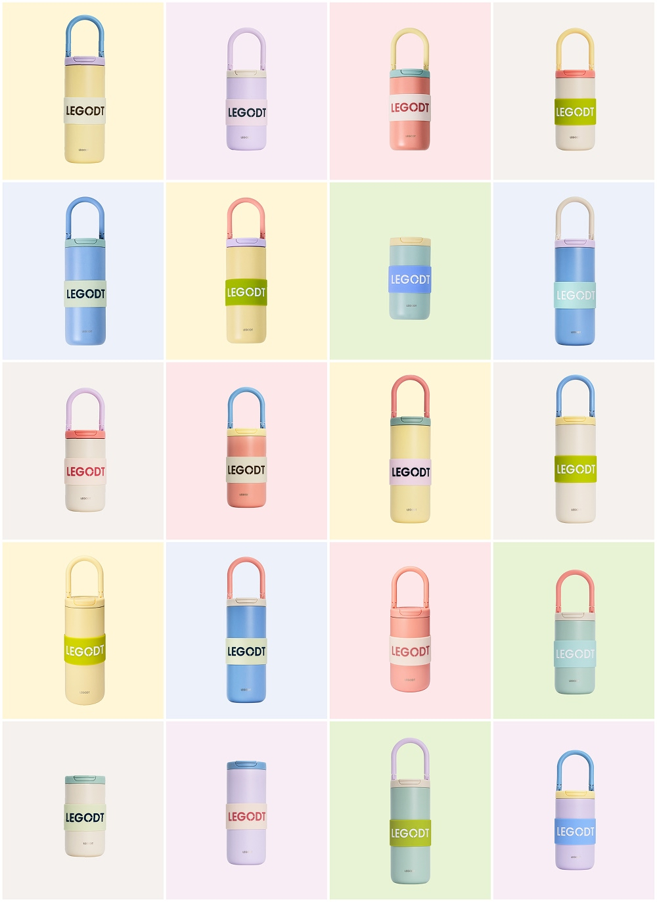

루프 텀블러 모듈은 나의 취향과 일상에 맞춰 완성하는 새로운 루프 시리즈입니다. 넉넉한 591ml(20oz) 용량으로 사무실, 캠퍼스, 장시간 외출 등 충분한 음용량이 필요한 순간에도 여유롭게 사용할 수 있으며, 필요한 파츠를 조합해 나만의 텀블러로 확장할 수 있습니다.
여기는 상세정보 영역입니다.
여기는 구매 후기 영역입니다.
여기는 상품 문의 영역입니다.